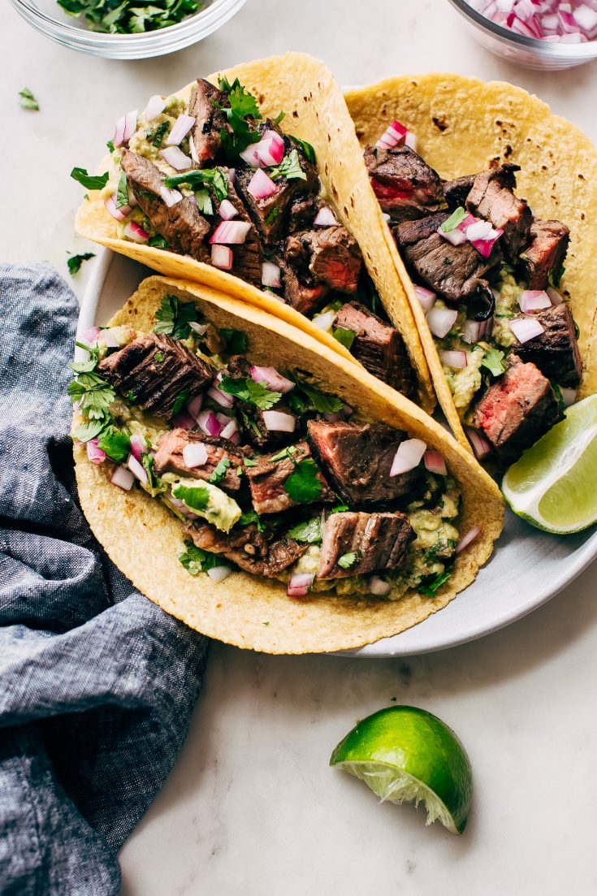

Steak Tacos
Easy and delcious steak tacos that only take 30 minutes to make

serves 4 people
- 1 pound of steak
- 1 Tablespoon of oil
- 1 teaspoon of cumin
- 1 teaspoon of chili poweder
- 1/2 teaspoon of coriander
- 1 teaspoon of pepper
- 1/2 teaspoon of red pepper
- 1/2 cup of cheese
- 12 corn torilas
- 1 tomato
- 1 cup of lettuce
- 4 Jalpenos
- Shop up steak into bite size pieces
- heat up pan on medium high heat with one table spoon of olive oil
- mix together spice mixture of cumin, chili powder, coriander, black pepper, red pepper
- Cook steak on medium high heat
- add spice mixture to pan
- Cook on medium high heat for 5-10 minutes
- serve on heated tortilas and top to taste